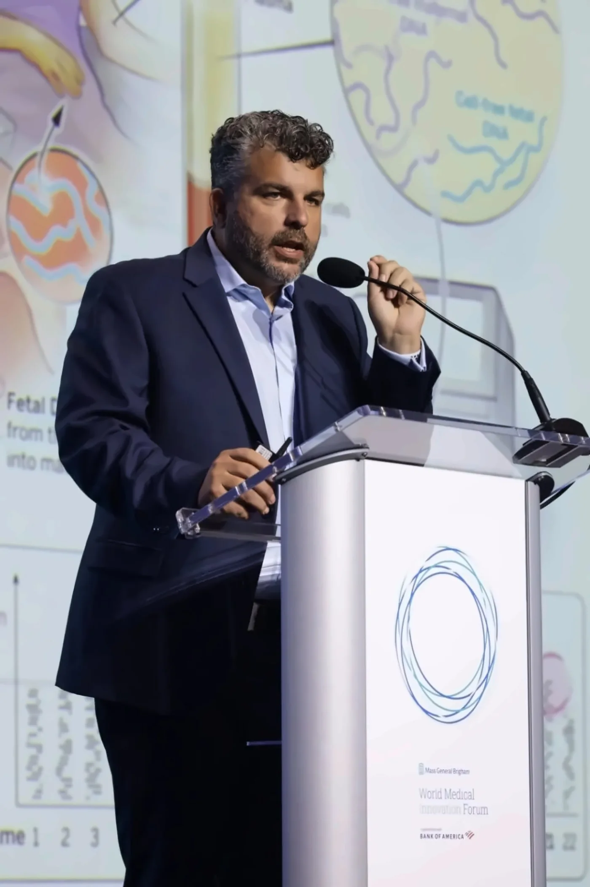

Sample preparation
Blood specimen is processed and prepared for sequencing.

Evaluation of the fetal exome from a single maternal blood draw.
1 Elsevier B.V. (2020). Exome Overview. ScienceDirect Topics. 2 Online Mendelian Inheritance in Man, OMIM®. (2026). About OMIM. McKusick-Nathans Institute of Genetic Medicine, Johns Hopkins University School of Medicine. Retrieved October 1, 2026, from omim.org
FGI's Approach
Fetal DNA circulates in a pregnant person’s blood. NIFS was developed to sequence this cell-free DNA to look at variation across the exome, the protein-coding regions of the genome.
Standard non-invasive prenatal testing (NIPT) looks at a limited number of common conditions. Thousands of genetic conditions fall outside that scope.2
Sequencing specimens from an invasive test can evaluate the whole exome, but the procedure carries a risk to the pregnancy.
2 Online Mendelian Inheritance in Man, OMIM®. (2026). About OMIM. McKusick-Nathans Institute of Genetic Medicine, Johns Hopkins University School of Medicine. Retrieved October 1, 2026, from omim.org
The evolution of prenatal screening
Protein & hormone markers
Whole chromosomes + select conditions
Broad gene-level screening
Gene-level screening
Screening estimates risk and does not diagnose. Positive results should be confirmed with diagnostic testing.
Non-invasive fetal sequencing
Blood specimen is processed and prepared for sequencing.
Sequencing generates millions of reads from cell-free DNA in the sample, which includes DNA of both maternal and fetal origin.
Analytic pipelines evaluate the sequencing data to identify genomic variants of interest.
How it worksOur Mission
Partners · Laboratories
*Subject to local laboratory and regulatory requirements.
Clinical · Validation
Publication · Brand et al., NEJM, 2023

Founders
Three physician-scientists with backgrounds at leading academic institutions.
Laboratories, partners, investors and researchers: tell us what you're working on.
*FGI cannot provide medical advice.